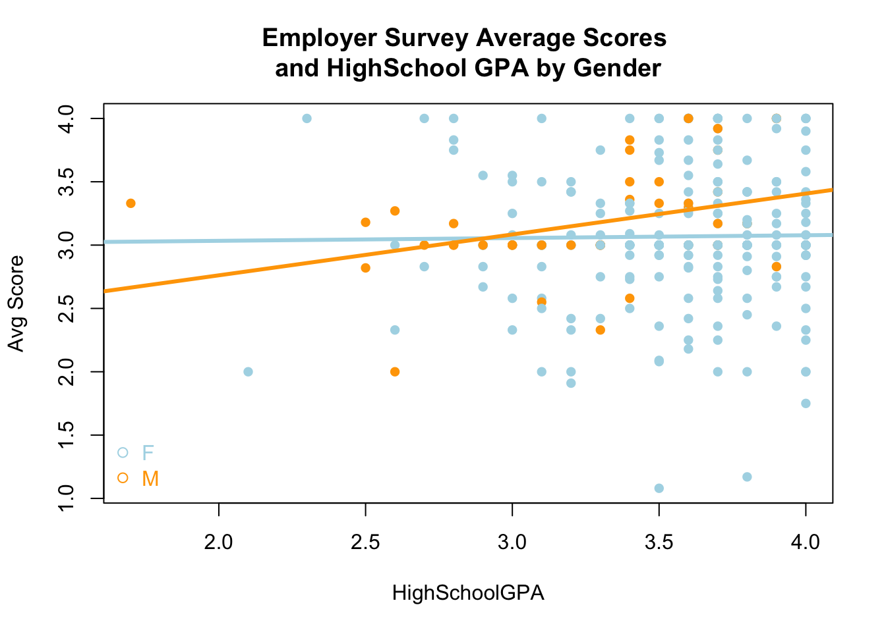

self_dropq <- self %>%mutate(`Avg Score`=round(rowMeans(select(., `Enable Student to Learn`:`Positive Effect on Student Achievement`), na.rm =TRUE), 2))employer_dropq <- employer %>%filter(`Enable Student to Learn`<5) %>%mutate(`Avg Score`=round(rowMeans(select(., `Enable Student to Learn`:`Positive Effect on Student Achievement`), na.rm =TRUE), 2)) drop_self <- self %>%select(StudentID:`Positive Effect on Student Achievement`, `Avg Score`) %>%pivot_longer(`Enable Student to Learn`:`Positive Effect on Student Achievement`) %>%mutate(weights =case_when( name =="Enable Student to Learn"~5, name =="Promote Active Student Learning"~5, name =="Plan Instruction"~5, name =="Determine Student Strengths"~10, name =="Meet Student Needs"~5, name =="Evaluate and Modify Teaching Plan"~5, name =="Encourage Diverse Perspectives"~5, name =="Support New English Learners"~5, name =="Help Student Assess Learning"~5, name =="Teach Students with Exceptional Needs"~5, name =="Honor Diverse Cultures"~5, name =="Positive Effect on Student Achievement"~10)) drop_employer <- employer %>%select(StudentID:`Positive Effect on Student Achievement`, `Avg Score`) %>%pivot_longer(`Enable Student to Learn`:`Positive Effect on Student Achievement`) %>%mutate(weights =case_when( name =="Enable Student to Learn"~5, name =="Promote Active Student Learning"~5, name =="Plan Instruction"~5, name =="Determine Student Strengths"~10, name =="Meet Student Needs"~5, name =="Evaluate and Modify Teaching Plan"~5, name =="Encourage Diverse Perspectives"~5, name =="Support New English Learners"~5, name =="Help Student Assess Learning"~5, name =="Teach Students with Exceptional Needs"~5, name =="Honor Diverse Cultures"~5, name =="Positive Effect on Student Achievement"~10)) self_dem_drop <-inner_join(self_dropq, dem, by ="StudentID") %>%distinct(StudentID, .keep_all =TRUE)self_dem_drop <- self_dem_drop[!is.na(self_dem_drop$`Avg Score`), ]#self_dem$Gender <- as.factor(self_dem$Gender)employer_dem_drop <-inner_join(employer_dropq, dem, by ="StudentID") %>%distinct(StudentID, .keep_all =TRUE)employer_dem_drop <- employer_dem_drop[!is.na(employer_dem_drop$`Avg Score`), ]
Call:
lm(formula = `Avg Score` ~ HighSchoolGPA + as.factor(Gender) +
HighSchoolGPA:as.factor(Gender), data = employer_dem_drop)
Residuals:
Min 1Q Median 3Q Max
-1.98691 -0.18086 -0.06691 0.28323 0.95965
Coefficients:
Estimate Std. Error t value Pr(>|t|)
(Intercept) 2.98943 0.34424 8.684 4.05e-16 ***
HighSchoolGPA 0.02214 0.09613 0.230 0.818
as.factor(Gender)Male -0.87330 0.64819 -1.347 0.179
HighSchoolGPA:as.factor(Gender)Male 0.30051 0.19192 1.566 0.119
---
Signif. codes: 0 '***' 0.001 '**' 0.01 '*' 0.05 '.' 0.1 ' ' 1
Residual standard error: 0.518 on 264 degrees of freedom
(48 observations deleted due to missingness)
Multiple R-squared: 0.01957, Adjusted R-squared: 0.008424
F-statistic: 1.756 on 3 and 264 DF, p-value: 0.156
Code
palette(c("lightblue","orange"))plot(`Avg Score`~ HighSchoolGPA , data=employer_dem_drop, col=as.factor(Gender),pch=16,main="Employer Survey Average Scores \nand HighSchool GPA by Gender")abline(2.98943,0.02214 , lwd =3,col=palette()[1])abline(2.98943-0.87330,0.02214+0.30051, lwd =3, col=palette()[2])legend("bottomleft", col=palette(), pch=21, legend=c("F", "M"), bty="n", text.col =palette())

Model is weighted average
Code
## weight avg ### Multiple Linear Regression Modelself_dem <-inner_join(self, dem, by ="StudentID") %>%distinct(StudentID, .keep_all =TRUE)self_dem <- self_dem[!is.na(self_dem$`Avg Score`), ]#self_dem$Gender <- as.factor(self_dem$Gender)employer_dem <-inner_join(employer, dem, by ="StudentID") %>%distinct(StudentID, .keep_all =TRUE)employer_dem <- employer_dem[!is.na(employer_dem$`Avg Score`), ]weight_self <- self_dem%>%mutate(`Enable Student to Learn Weight`=`Enable Student to Learn`*5,`Promote Active Student Learning Weight`=`Promote Active Student Learning`*5,`Plan Instruction Weight`=`Plan Instruction`*5,`Determine Student Strengths Weight`=`Determine Student Strengths`*10,`Meet Student Needs Weight`=`Meet Student Needs`*5,`Evaluate and Modify Teaching Plan Weight`=`Evaluate and Modify Teaching Plan`*5,`Encourage Diverse Perspectives Weight`=`Encourage Diverse Perspectives`*5,`Support New English Learners Weight`=`Support New English Learners`*5,`Help Student Assess Learning Weight`=`Help Student Assess Learning`*5,`Teach Students with Exceptional Needs Weight`=`Teach Students with Exceptional Needs`*5,`Honor Diverse Cultures Weight`=`Honor Diverse Cultures`*5,`Positive Effect on Student Achievement Weight`=`Positive Effect on Student Achievement`*10,`Use Technology Weight`=`Use Technology`*0,`Teamwork Weight`=`Teamwork`*0,`Self-reflection Weight`=`Self-reflection`*0,`Maintain Accurate Records Weight`=`Maintain Accurate Records`*0) %>%mutate(`Weight Avg Score`=round(rowMeans(select(., `Enable Student to Learn Weight`:`Maintain Accurate Records Weight`), na.rm =TRUE), 2))weight_emp <- employer_dem%>%mutate(`Enable Student to Learn Weight`=`Enable Student to Learn`*5,`Promote Active Student Learning Weight`=`Promote Active Student Learning`*5,`Plan Instruction Weight`=`Plan Instruction`*5,`Determine Student Strengths Weight`=`Determine Student Strengths`*10,`Meet Student Needs Weight`=`Meet Student Needs`*5,`Evaluate and Modify Teaching Plan Weight`=`Evaluate and Modify Teaching Plan`*5,`Encourage Diverse Perspectives Weight`=`Encourage Diverse Perspectives`*5,`Support New English Learners Weight`=`Support New English Learners`*5,`Help Student Assess Learning Weight`=`Help Student Assess Learning`*5,`Teach Students with Exceptional Needs Weight`=`Teach Students with Exceptional Needs`*5,`Honor Diverse Cultures Weight`=`Honor Diverse Cultures`*5,`Positive Effect on Student Achievement Weight`=`Positive Effect on Student Achievement`*10,`Use Technology Weight`=`Use Technology`*0,`Teamwork Weight`=`Teamwork`*0,`Self-reflection Weight`=`Self-reflection`*0,`Maintain Accurate Records Weight`=`Maintain Accurate Records`*0) %>%mutate(`Weight Avg Score`=round(rowMeans(select(., `Enable Student to Learn Weight`:`Maintain Accurate Records Weight`), na.rm =TRUE), 2))